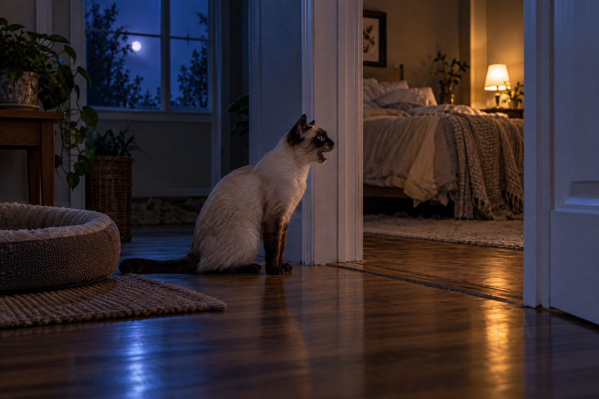

Check basic needs first, build daytime play and an evening routine, and seek veterinary advice for new or intense nighttime meowing.
A cat meowing at 2 a.m. can disrupt the whole household. The sound may mean the cat wants food, attention, access to a room, or help with a problem. Understanding the pattern is kinder and more effective than simply trying to silence it.
Rule out an immediate need
Check that water is available, the litter box is clean, and your cat is not trapped or distressed. Notice whether meowing happens at a specific door or around feeding time. A sudden change in vocalizing, especially in an older cat, deserves a veterinary conversation.
Do not ignore signs such as restlessness, weight change, increased thirst, or difficulty using the litter box. Several medical issues can affect nighttime behavior, and your veterinarian can assess them.
Begin by checking the cat, not by deciding the behavior is attention seeking. Has the cat eaten normally, used the litter box, and had access to fresh water? Is a door closed where the cat expects to go, or is another animal blocking a route? A sudden change in nighttime vocalization can accompany discomfort or illness, especially in an older cat. Note whether the sound is different, whether the cat seems confused, and whether it settles when you approach. If the pattern is new or intense, call your veterinarian.
Keep observations for several nights if the cat otherwise seems well. Record the time, location, what happened before the meowing, and how everyone responded. This can show whether the noise follows a meal schedule, a household sound, or another pet's movement. It is more useful than simply counting how many times you woke up.
Shape a more predictable evening
Many cats are active around dawn and dusk. A short play session before bed followed by a meal can support a calmer night. Puzzle feeders and daytime enrichment may reduce boredom, particularly for indoor cats.
Choose a feeding routine you can maintain. If breakfast always follows loud meowing, the cat may learn that waking you works. An automatic feeder may help separate food from your response, but only after health concerns have been considered.
A predictable evening may help a healthy cat settle. Offer a short, interactive play session that lets the cat chase and catch an appropriate toy, then provide the planned meal if that fits its feeding routine. Keep food portions consistent with the daily plan rather than adding a second dinner as a quick fix. Make the sleeping environment comfortable: accessible water, a clean litter box, and a quiet resting choice away from a noisy appliance. Some cats prefer company; others settle better with a separate retreat.
Do not expect one play session to change an established pattern overnight. Try a consistent routine and observe whether the time or intensity of calling shifts. If the cat is hungry because meals are poorly spaced, discuss a feeding schedule with your veterinarian. An automatic feeder may help some households, but it will not address pain, anxiety, or a medical reason for waking.

Respond without escalating
Avoid yelling or punishment. It may increase stress and rarely teaches a useful alternative. Reward quiet behavior during the day and give your cat a comfortable sleeping area with choices about light and warmth.
If you decide not to respond to attention-seeking meows overnight, be consistent while still checking for genuine needs. Other household members should follow the same plan.
Your response can unintentionally teach a pattern. If the cat meows, receives a large meal, and then quiets, the meal may reinforce the call even when hunger was not the original cause. That does not mean ignoring a cat who may need help. First rule out health and access problems. For a healthy cat with an established attention pattern, reward calm behavior during the day and build predictable opportunities for interaction. Keep nighttime responses brief and consistent instead of alternating between shouting and long play sessions.
Punishment can increase stress and rarely teaches a cat what to do at night. Do not spray water, chase, or confine a frightened cat without considering its needs. If the cat seems anxious when alone, provide a safe resting area and speak with your veterinarian about appropriate support. A behavior professional can help with a plan once medical causes are assessed.
Track the pattern
Write down the time, duration, and what happened before the meowing. Has a new pet arrived? Did the feeding schedule change? Is the cat pacing? A short log helps you test routine changes and gives a veterinarian better context when needed.
Older cats deserve extra attention when the pattern changes. Reduced vision or hearing, discomfort, and other health issues can affect nighttime behavior. Keep pathways clear and familiar; a small night light may make a dark route easier for some cats. Move essential resources only gradually. If the cat appears disoriented, vocalizes in unusual places, or changes appetite or litter habits, do not frame it as a training problem. Document the signs and arrange an examination.
For any age, watch for repeated trips to the box, vomiting, trouble jumping, or excessive drinking. These details can matter more than the meow itself. If a cat is straining to urinate or seems acutely distressed, seek urgent care. A behavior plan should never require withholding water or delaying needed food from an animal with a medical condition.
Practical details
Separate a learned routine from a new symptom
If a cat meows at the same time every night and leads you to the kitchen, the sound may be tied to feeding expectations. If it starts suddenly, grows louder, or comes with pacing, appetite change, increased thirst, or litter-box trouble, a veterinarian should assess the cat. Older cats can have medical or sensory changes that alter nighttime behavior; calling it attention-seeking too quickly can delay care.
A short observation log is useful. Record when the cat vocalizes, whether the body looks relaxed or distressed, and what happens immediately afterward. Do you get up, offer food, open a door, or play? The pattern can show whether your response is reinforcing a routine, but it does not rule out illness.
A measured evening plan
- Before bedCheck fresh water, a clean litter box, and access to a comfortable sleeping place.
- Early eveningOffer an active play session suited to the cat's age and mobility.
- After playServe the usual meal or a measured portion, then allow a quiet wind-down period.
- Over the next weekRecord the time and context of meowing, adjusting one routine element at a time.
Design the day, not just the night
Cats need chances to hunt through play, explore, rest, and eat on a predictable schedule. A short interactive play session before the evening meal may help some cats settle. Food puzzles can stretch a meal into an activity, while a window perch or safe toys can add daytime interest. Choose activities the individual cat enjoys instead of forcing exercise near bedtime.
If your cat wakes you for breakfast, an automatic feeder may separate food from your response. Set it at a consistent time and measure the portion as part of the daily diet. Do not use a feeder to ignore a cat who is vomiting, losing weight, or showing another health change.
Household timing may explain some of the pattern. A cat that sleeps through a quiet workday may be active when people return, and an early breakfast can create a strong dawn expectation. Consider adding daytime enrichment: a window perch, safe puzzle feeder, brief play opportunities, and predictable human attention. Rotate toys without leaving strings or small unsafe items unattended. In a multicat home, check whether one cat disrupts another's sleep or access to a favored resting place.
Change one variable at a time and keep notes. If you move feeding time, also record play, household bedtime, and any change in vocalizing. That makes it possible to tell whether the plan helped. A rigid expectation of total silence is unrealistic for a communicative animal, but repeated distress or a sudden rise in calling should not be dismissed.
Respond consistently and kindly
Yelling may increase stress and does not teach the cat what to do instead. After you have checked health and basic needs, choose a routine that everyone in the household can follow. Reward calm settling during the day and provide a comfortable sleep area. If you sometimes reward loud meowing with attention and sometimes ignore it, the pattern may take longer to change.
A cat who becomes highly distressed when separated may need a more tailored plan. Ask your veterinarian about possible medical contributors and, if appropriate, a qualified cat behavior professional. Success means a cat that is comfortable and a household that sleeps, not simply a quieter cat at any cost.
For example, a young cat calls at 5 a.m. and receives breakfast immediately. After a veterinary check confirms normal health, the household may shift to a reliable feeding schedule and reward quiet moments rather than serving food during active calling. Progress might mean the call starts later or lasts less time. Another cat begins yowling at night while drinking more and losing weight; that situation calls for a veterinary visit, not a feeder adjustment. The same sound can have very different implications.
Review your notes after a week or two, or sooner if the cat is unwell. If there is no clear improvement despite a calm routine, ask for professional help. Bring the timing record and, if possible, a short audio or video clip. A good plan responds to the individual cat and preserves sleep for the household without ignoring a possible health signal.
Review the pattern during daylight too. Is the cat sleeping unusually much because there is little opportunity to play, or does it seem restless and vocal all day? Does the meowing occur at a doorway, near the food area, or in an empty hallway? Each location may suggest a different need to investigate. Keep the cat's normal access to water and litter while you test a calmer evening routine. If a feeder is used, maintain the total daily amount and clean it regularly. A mechanical schedule is useful only if the cat remains healthy and comfortable.
If household members disagree about responding, settle on one plan before bedtime. One person offering treats at every call while another ignores the cat makes the pattern unpredictable. Still, a new or distressed call deserves assessment rather than strict nonresponse. Record progress by frequency, duration, and the cat's daytime behavior. If sleep disruption continues despite a consistent routine, share the record with a veterinarian and ask whether medical or behavioral evaluation is appropriate.
A seven-night observation plan
Record the time your cat vocalizes, where it stands, and what happens immediately before and after. Does the cat call beside a closed door, food bowl, window, or litter box? Note whether a play session and normal meal earlier in the evening change the pattern. This turns a vague complaint about nighttime noise into a description you can use to adjust the routine or share with a veterinarian.
Offer active play while you are awake, then allow a quiet wind-down. Make sure water, litter, and a comfortable resting area remain available overnight. Avoid rewarding only the loudest calls with an unpredictable late-night snack if attention seeking seems to be the pattern. However, do not ignore a new or distressed vocalization, especially in an older cat or one with changed appetite, thirst, or mobility.
If the cat is newly adopted, allow time for the home to become familiar. Keep sleeping spaces consistent and reduce sudden nighttime disturbances. When a change starts abruptly or is accompanied by confusion, repeated trips to the litter box, or weight loss, arrange a veterinary evaluation before treating it as a training issue.
Continue exploring
For a broader routine, read How Often Should You Change Cat Litter?, Why Is My Cat Suddenly Hiding?, and How to Help a Cat Feel Safe in a Carrier.
Frequently Asked Questions
Is nighttime meowing normal for cats?
Some vocal activity is common, but new, persistent, or distressed-sounding meowing warrants attention.
Will more play stop my cat meowing at night?
It may help when boredom or excess energy contributes, but it will not address a medical cause.
Should I feed my cat every time it meows?
First check wellbeing; then use a consistent feeding plan rather than responding to every call.
Editorial references
These resources informed the general guidance in this article. They do not replace advice tailored to your pet.
This guide offers general information. Your pet’s age, health, and history may call for a different plan. For medical concerns, ask your veterinarian.